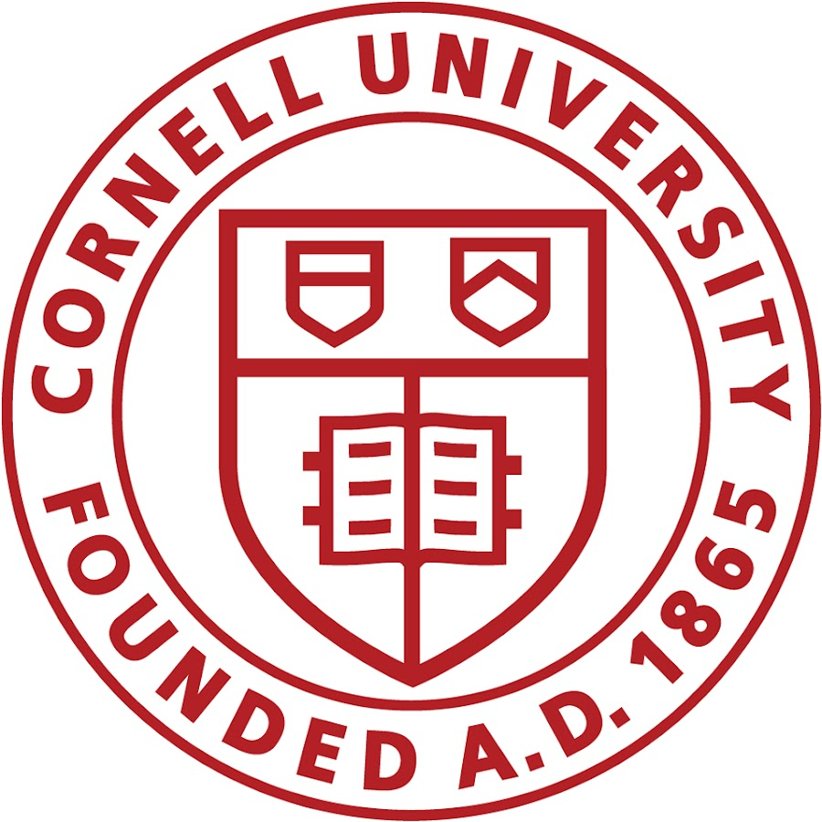
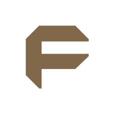
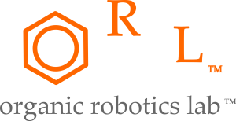
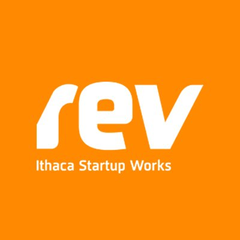
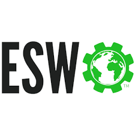
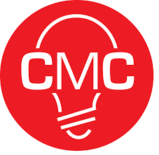

Experience
Where I've been

May 2018 - Aug 2018
- Major: Electrical and Computer Engineering
- Minor: Education
- GPA: 3.92

May 2019 - Aug 2019
- Prototyped and created an ecclectic mix of products including an electric skateboard, an alternative keyboard, an SLA post-processing system, and a mason jar security lid
- Utilized rapid prototyping techniques including 3D printing, milling, and PCB design to efficiently iterate through various designs
- Worked closely with company clients to determine their needs and the feasibility of demands
- Led cycles of lean product development in which products were designed, manufactured, and marketed
May 2018 - Aug 2018
- Developed augmented reality software on the Microsoft HoloLens for use in design review
- Led the decision-making process for power systems in autonomous ground vehicles
- Designed biometric login protocol and tested facial, fingerprint, and vein recognition

Nov 2016 - Present
- Researched with Dr. Robert Shepherd in the soft robotics and modern 3D printing field
- Designed prosthetic hand with variable transmission and laser proprioception sensor
- Developed pneumatic palm orthotic with a gyroidal skeleton for paralyzed patients
Dec 2017 - Present
- Created & conducted workshops to teach Autodesk Fusion and Eagle design programs
- TA for BME 4090, MAE 2250, BME 4080 design classes and advisor for 8 project teams
- Designed parts and prototypes for medical devices and mechanical synthesis prototypes

Hardware Manager at Rev
Aug 2018 - Present
- Managed & maintained accelerator equipment (3D printers, laser cutter, CNC mill)
- Contracted design projects for startups within Rev and for the space itself
- Organizeed events for startups to encourage networking, brainstorming, and pitching

Aug 2016 - Present
- Designed and built a waste vegetable oil biodiesel reactor to produce continuous fuel used by the Grounds Department while mitigating waste from local restaurants and apartments
- Implemented algal biodiesel reactor to be implemented on rooftops to scrub carbon dioxide while maintaining an environment for algae to grow quickly
- Conducted research on Hydrothermal Processing to convert anaerobic digestion waste into valuable biocrude

Aug 2018 - Present
- Organized campus make-a-thons and hack-a-thons including the Creative Sprint, the Life Chaning Makeathon, and CU Makeathon
- Managed the Maker Space lab space and maintained prototyping equipment
- Conducted training for new members and facilitated workshops to teach students prototyping skills
May 2017 - August 2017
- Taught an advanced engineering summer camp for gifted 10-12 year olds inspiring them with hands-on activities and mentorship
- Designed unique and meaningful lesson plans to introduce them to various topics in engineering including building and coding an Arduino based robot, creating a solar cell from organic materials, 3D design and 3D printing, modern prosthetics, and structural stability.